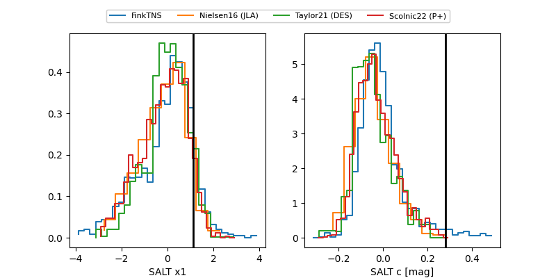

FINK: ZTF25abllnih
Lasair: ZTF25abllnih
ALeRCE: ZTF25abllnih
TNS: 2025vof
YSE: 2025vof
ZTF25abllnih (ztf,fink)
2025vof (tns,yse)
ATLAS25kqn (atlas)
PS25hku (panstarrs)
equatorial (ra, dec) = (352.0114,-13.69779)
galactic (l, b) = (63.3811,-66.35389)

last atlaso=19.08, ztfg=20.18, ztfr=19.63
1 atlaso, 2 ztfg, 7 ztfr detections